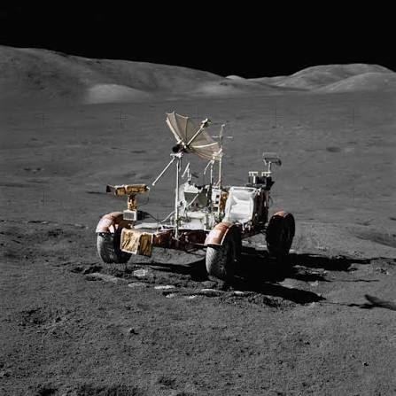
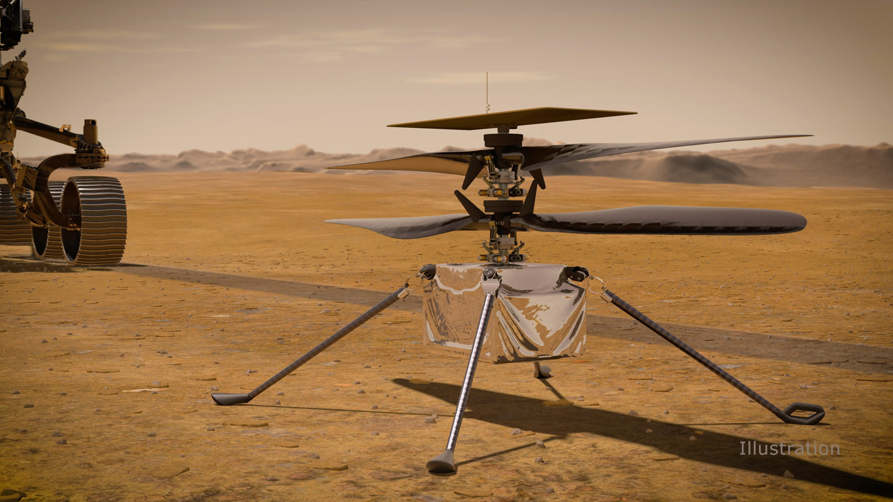

SECTOR 01 // TERRESTRIAL
EARTH // Ocean Floor & Deserts
Skylab debris in Australia, sunken Saturn V F-1 stages in the Atlantic, sand-swept calibration crosses, and weather balloons lost in polar ice.
An interactive archive of forgotten, lost, and intentionally left-behind NASA spacecraft and hardware across Earth, the Moon, and Mars — from concrete calibration crosses in the Mojave Desert to dust-buried rovers.
Skylab debris in Australia, sunken Saturn V F-1 stages in the Atlantic, sand-swept calibration crosses, and weather balloons lost in polar ice.

Descent stages, lunar rovers, laser retroreflectors, two golf balls, and a family portrait in a plastic bag bleached by solar radiation.

Sleeping rovers Spirit and Opportunity, the Ingenuity helicopter with a damaged rotor blade, and parachutes and heat shields scattered by wind.
Drag to rotate Earth, Moon, or Mars in real time. Click any surface beacon or card to inspect photos, status, reason left behind, coordinates, top-down orbital view, and mission audio.
Slide from NASA’s founding in 1958 to 2026 to trace how left-behind artifacts evolved from simple aluminum reflectors and seismometers to rovers and the Ingenuity helicopter.